1.需求
1.1. 故障描述
【故障现象】DRDS经常通过JDBC会连接超时，但是当时DRDS负载及连接数都不高。
【故障频率】2017年7月1日开始正式使用这套系统
（一）2017年7月8日下午2点到4点之间又出现连接超时现象。具体报错见下图。
（二）2017年7月9日全天都有问题。报错日志还没有提供
【联系方式】
联系人1：
联系人2：
【系统权限】
【报错日志】
20170708报错：
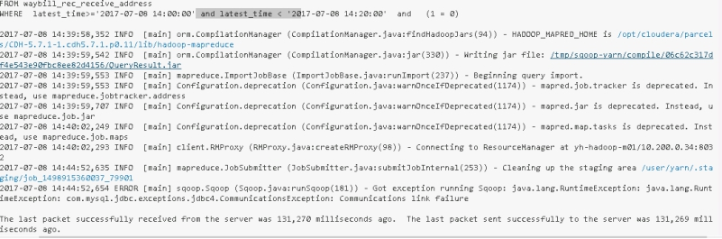
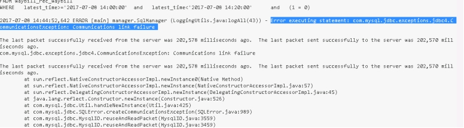
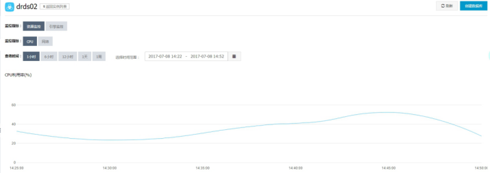
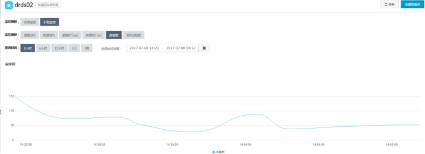
20170709报错：
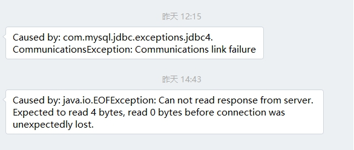
1.2. 信息获取
【架构信息】
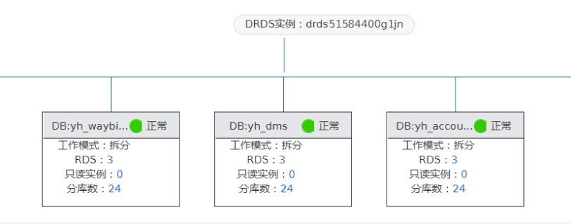
【监控信息】
其中一台后端RDS
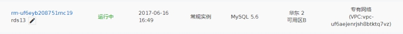
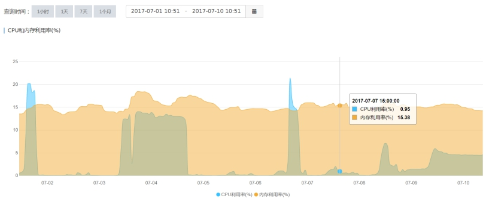
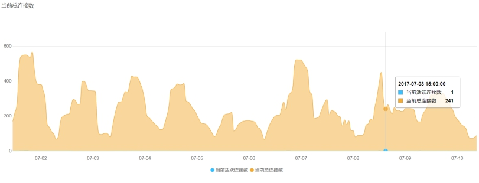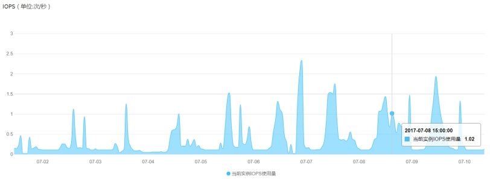 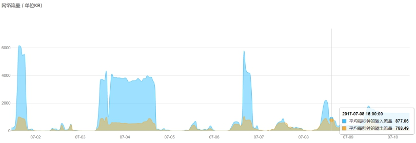
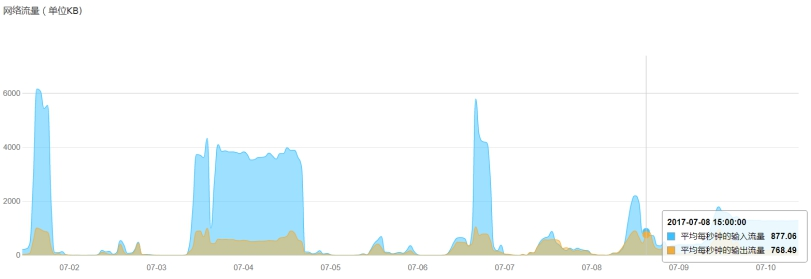
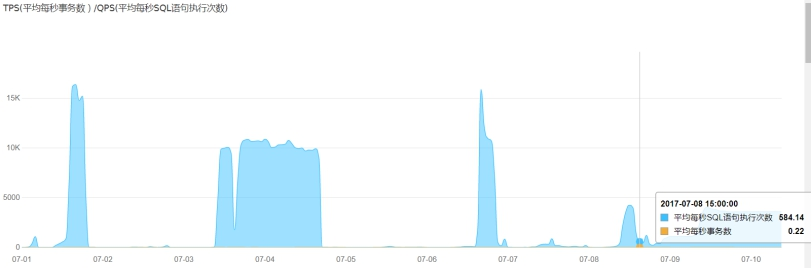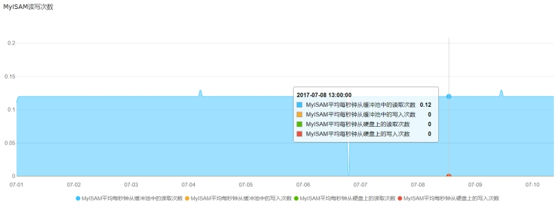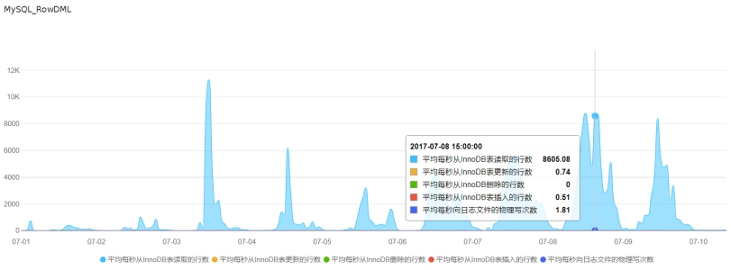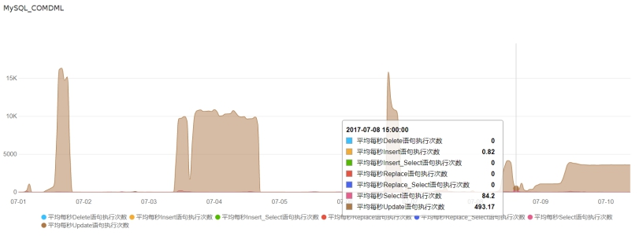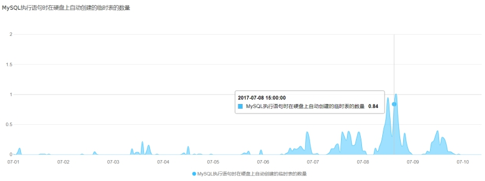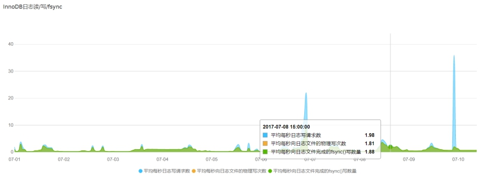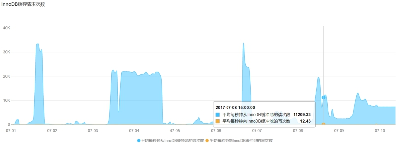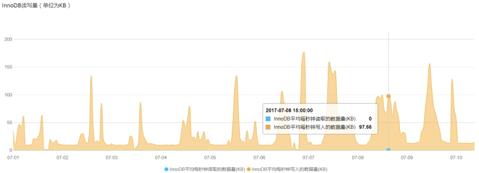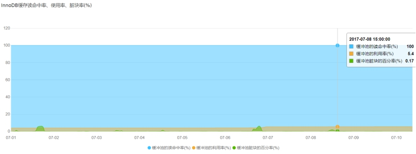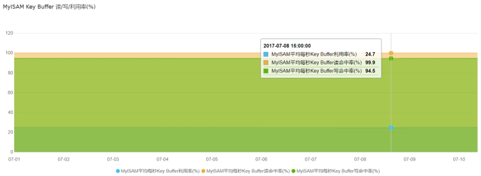
【参数配置】
auto_increment_increment = 1
auto_increment_offset = 1
back_log = 3000
binlog_cache_size = 2048KB
binlog_checksum = CRC32
binlog_row_image = full
binlog_stmt_cache_size = 32768
character_set_server = utf8
concurrent_insert = 1
connect_timeout = 10
default_storage_engine = InnoDB
default_time_zone = SYSTEM
default_week_format = 0
delayed_insert_limit = 100
delayed_insert_timeout = 300
delayed_queue_size = 1000
delay_key_write = ON
div_precision_increment = 4
eq_range_index_dive_limit = 10
explicit_defaults_for_timestamp = false
ft_min_word_len = 4
ft_query_expansion_limit = 20
group_concat_max_len = 1024
innodb_adaptive_hash_index = ON
innodb_additional_mem_pool_size = 2097152
innodb_autoinc_lock_mode = 1
innodb_concurrency_tickets = 5000
innodb_ft_max_token_size = 84
innodb_ft_min_token_size = 3
innodb_large_prefix = OFF
innodb_lock_wait_timeout = 50
innodb_max_dirty_pages_pct = 75
innodb_old_blocks_pct = 37
innodb_old_blocks_time = 1000
innodb_online_alter_log_max_size = 134217728
innodb_open_files = 3000
innodb_print_all_deadlocks = OFF
innodb_purge_batch_size = 300
innodb_purge_threads = 1
innodb_read_ahead_threshold = 56
innodb_read_io_threads = 4
innodb_rollback_on_timeout = OFF
innodb_stats_method = nulls_equal
innodb_stats_on_metadata = OFF
innodb_stats_sample_pages = 8
innodb_strict_mode = OFF
innodb_table_locks = ON
innodb_thread_concurrency = 0
innodb_thread_sleep_delay = 10000
innodb_write_io_threads = 4
interactive_timeout = 7200****
key_cache_age_threshold = 300
key_cache_block_size = 1024
key_cache_division_limit = 100
log_queries_not_using_indexes = OFF
long_query_time = 1
loose_max_statement_time = 0
loose_rds_indexstat = OFF
loose_rds_max_tmp_disk_space = 10737418240
loose_rds_tablestat = OFF
loose_rds_threads_running_high_watermark = 50000
loose_tokudb_buffer_pool_ratio = 0
low_priority_updates = 0
max_allowed_packet = 1024M
max_connect_errors = 100
max_length_for_sort_data = 1024
max_prepared_stmt_count = 16382
max_write_lock_count = 102400
myisam_sort_buffer_size = 262144
net_read_timeout = 30
net_retry_count = 10
net_write_timeout = 60
open_files_limit = 65535
performance_schema = OFF
query_alloc_block_size = 8192
query_cache_limit = 1048576
query_cache_size = 3145728
query_cache_type = 0
query_cache_wlock_invalidate = OFF
query_prealloc_size = 8192
rds_reset_all_filter = 0
slow_launch_time = 2
sql_mode =
table_definition_cache = 512
table_open_cache = 2000
thread_stack = 262144
tmp_table_size = 2097152
transaction_isolation = READ-COMMITTED
wait_timeout = 86400
|
2. 分析
| id |
时间 |
报错信息 |
详细内容 |
| 1 |
2017-07-08 14:44:52 |
mysql.jdbc.exceptions.jdbc4.ConnectionException |
conmunication link fail |
| 2 |
2017-07-08 15:51:08 |
mysql.jdbc.exceptions.jdbc4.MysqlNonTransientConnectionException |
the server has been shutdown |
客户截图中的两个报错信息
RDS 默认设置连接超时时间的参数有两个：
【wait_timeout = 86400】
【interactive_timeout = 7200】
【wait_timeout\interactive_timeout】值为mysql在关闭一个交互式/非交互式的连接之前所要等待的时间。建议不需要设置太长的时候，否则会占用实例的连接数资源。
分别为24小时和2小时，同一时间，这两个参数只有一个起作用。到底是哪个参数起作用，和用户连接时指定的连接参数相关，缺省情况下是使用wait_timeout。如果应用程序的连接超过24小时没有新的动作，那么RDS就会断开此连接。
【故障原因】
原因可能性有：
drds url连接有问题；
应用端连接闲置超时而被 MySQL 断开
3. 解决方案
第一原因需要客户等再次出现的时候再观察一下url连接是否有效。我这边也发工单给阿里了。
第二个原因的解决建议如下。
建议：
1）数据库层：将wait_timeout值设为最大259200
2）应用开发层：减少连接池内连接的生存周期，使之小于上一项中所设置的 wait_timeout 的值；或者定期使用连接池内的连接，使得它们不会因为闲置超时而被 MySQL 断开。
例如：
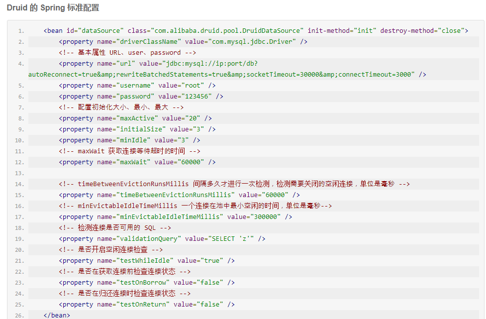
参考：
https://help.aliyun.com/knowledge_detail/41714.html
https://help.aliyun.com/document_detail/51475.html?spm=5176.doc29668.6.624.QJeTt1